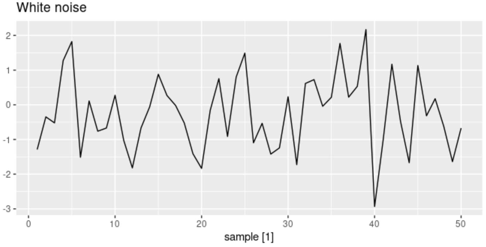

Forecasting Workflow¶
Arthur Mello. 2019. A Lean Forecasting Workflow
Forecasting: Principle and practice. Chapter 5. Rob Hyndman and George Athanasopoulos.
Request¶
First, you need to develop your business understanding:
What is the goal for these forecasts (understanding the overall structure of your revenue income, guiding production decisions, reporting to shareholders…)?
How will they be used (should they be sent to a dashboard or will they be sent to another automated system)?
Who will use them (is it someone who is well-versed in data science, the company’s CEO, investors…)?
Who will maintain them?
At what level (overall, by store, by product…)?
At what time frame (weekly, monthly…)?
How long in advance will we generate forecasts (for the next week, the next year…)?
Is there external data to be used (weather, holidays…)? Source: Arthur Mello. 2019.
Technical Setup Questions¶
This is where you choose the tools and also workflow design.
Some experts recommend to have one notebook for each step: data treatment, analysis and modelling
Document your data sources, how they are collected, stored and merged, and where your scripts will be
Data Treatement Questions¶
Data Collection:
Queries from a database, web scrapping etc.
Consider the levels of aggregation needed, external variables and timeframes.
Data Cleaning
How to deal with outliers and missing values
Feature Engineering
What additional features would help you discover additional patterns (expert knowledge, apriori knowledge)?
Analysis Questions¶
Is there a trend?
Is this time series stationary?
Is there seasonality? At what levels (daily, weekly…)?
If there are external variables, how do they interact with each other (especially with the variable you are trying to predict)?
What is the appropriate error measure for evaluation?

Modeling¶
The R package fable provides a collection of commonly used univariate and multivariate time series forecasting models including exponential smoothing via state space models and automatic ARIMA modelling.
Model Function: The response variable (y) is specified on the left of the formula, and the model is written on the right.

model()s function is used to estimate these model specifications on a particular dataset, and will return a model table.

coef()function is used to extract the coefficients from the models. It is possible to use filter() and select() to focus on the coefficients from a particular model.
fit %>% filter(Country == 'United States') %>% coef()
glance()provides a one-row summary of each model, and commonly includes descriptions of the model’s fit such as the residual variance and information criteria.

Note
information criteria (AIC, AICc, BIC) are only comparable between the same model class and only if those models share the same response (after transformations and differencing).
report()provides a formatted model-specific display
fit %>% filter(Country == 'United States') %>%
report()
accuracy()provides common accuracy measures
fit %>% filter(Country == 'United States') %>%
accuracy()

forecast()is used when the appropriate model is built. We specify the number of future observations to forecast. For example,h = 10forecasts for the next 10 observations;h = "2 years"forecasts for two years into the future.
fit %>% forecast(h = "3 years")
augment()function provides the original data with both fitted values and their residualsThe fitted values and residuals can also be obtained using fitted() and residuals()
Residuals are useful in checking whether a model has adequately captured the information in the data
fit %>%
filter(Country == "Sweden") %>%
augment(fit)

- .fitted contains the fitted values;
- .resid contains the residuals;
- .innov contains the “innovation residuals”
Note
Fitted Values = predicted values based on previous observations
Residuals = The residuals are equal to the difference between the observations and the corresponding fitted values
innovation residuals = residuals on the transformed scale
hilo()function extracts confidence intervals
# Forecasting with an ETS(M,Ad,A) model to Australian beer production
beer_fc <- aus_production %>%
model(ets = ETS(log(Beer) ~ error("M") + trend("Ad") + season("A"))) %>%
forecast(h = "3 years")
# Compute 80% and 95% forecast intervals
beer_fc %>%
hilo(level = c(80, 95)) %>%
select('80%', '95%') %>%
as.character()
Simple Forecasting Models¶
These methods will serve as benchmarks rather than the method of choice
Average / Mean Method¶
Mean Model - the forecasts or the future predictions are equal to the average or mean of the historical data available

# here we are using only a section from data
bricks <- aus_production %>%
filter_index("1970 Q1" ~ "2004 Q4") %>%
select(Bricks)
MEAN()function can be combined withforecast()where we can specify the forecasting period
fit <- bricks %>%
model(mean_model = MEAN(Bricks))
fit %>% forecast(h = '2 year') %>%
autoplot(bricks)

Naive Method¶
With Naive method, we set all the forecasts to the latest observation values. This method can be applied to many time series including most stock price data, and even if it is not a good forecasting method, it provides a useful benchmark for other forecasting methods.
fit <- bricks %>% model(NAIVE(Bricks))
fit %>% forecast(h = '2 year') %>%
autoplot(bricks)

A naïve forecast is optimal when data follow a random walk, this method is also called random walk forecasts and the RW() function can be used instead of NAIVE()
Seasonal Naive Method¶
A similar NAIVE method is useful for highly seasonal data. In this case, we set each forecast to be equal to the last observed value from the same season: for example, the forecast for January month values will be equal to the last observed January values [Ch.5]
lag()function is optional: we have a quartely data bricks and we specify a one-year lag
fit <- bricks %>% model(SNAIVE(Bricks ~ lag("year")))
fit %>% forecast(h = '2 year') %>%
autoplot(bricks)

Drift Method¶
A naive method where the forecasts are allowed to increase or decrease over time. The amount of change over time (called the drift) is set to be the average change in the historical data.
As mentioned in Ch.5: “This is equivalent to drawing a line between the first and last observations, and extrapolating it into the future.”
fit <- bricks %>% model(RW(Bricks ~ drift()))
fit %>% forecast(h = '5 year') %>%
autoplot(bricks)

Residual Diagnostics¶
The innovation residuals are uncorrelated.
The innovation residuals have zero mean. [If they have a mean other than zero, then the forecasts are biased.]
The innovation residuals have constant variance. This is known as “homoscedasticity”.
The innovation residuals are normally distributed.